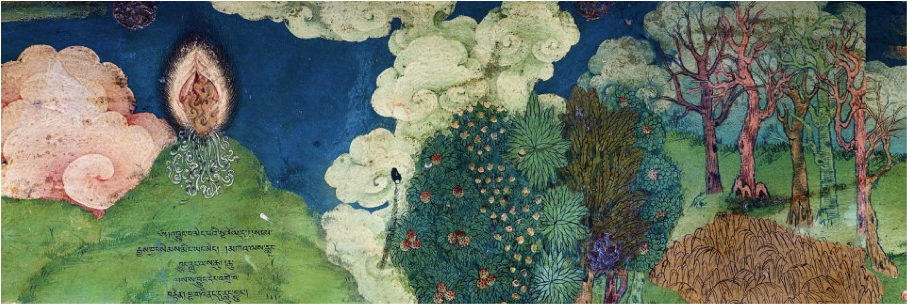
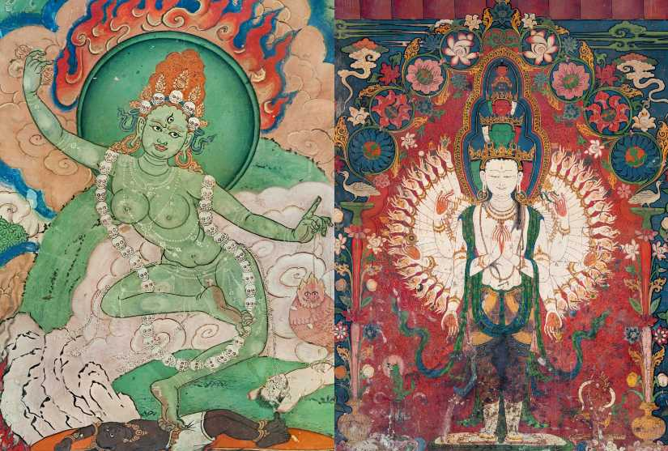
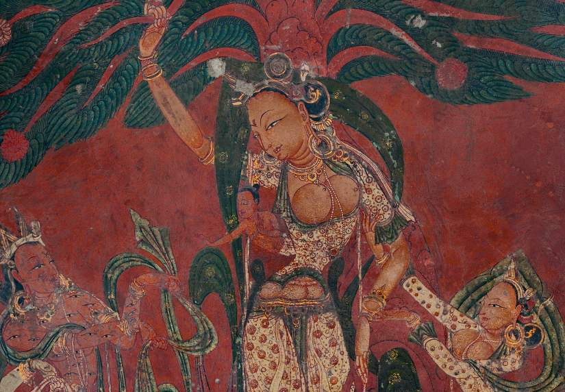
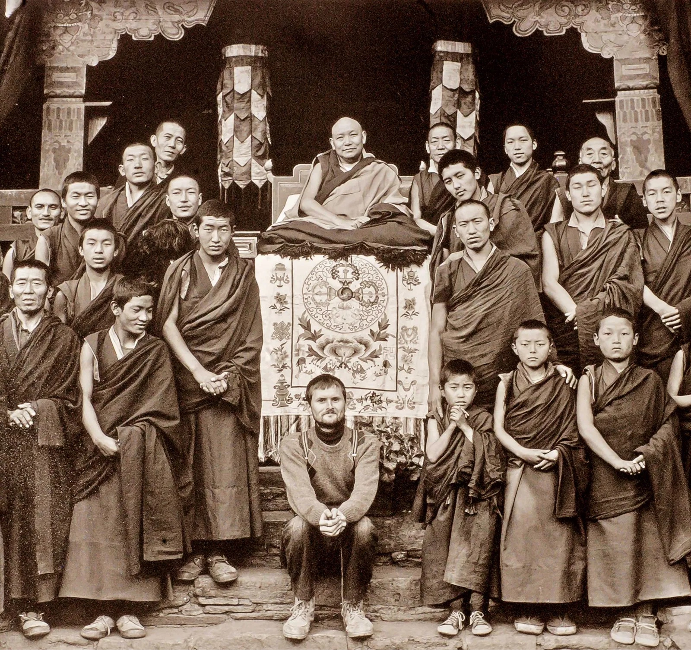

14 Le tradizioni tibetane

14.1 Allenamento mentale
Le tradizioni buddiste tibetane hanno sviluppato approcci unici, pragmatici e concreti per la coltivazione della gentilezza amorevole, della compassione e del bodhicitta, chiamati lojong (addestramento della mente). Usando un linguaggio occidentale, potremmo chiamare tali pratiche “tecnologie del sé” usando un termine di Michel Foucault, perché corrispondono a pratiche contemplative e immaginative che sono specificamente rivolte ad una trasformazione personale, ovvero a fornire un insieme di linee guida pratiche volte a modellare l’esperienza quotidiana.
Nella tradizione buddista tibetana, testi come “L’allenamento mentale in sette punti” o “Le trentasette pratiche del bodhisattva” godono di una grande popolarità. Quando il Dalai Lama parlò a una folla di quasi centomila persone nel Central Park di New York nel 1999, scelse gli “Otto versi sull’allenamento mentale” come base del suo intervento. Quando il Dalai Lama tornò a parlare ancora una volta a Central Park nel 2002, scelse come argomento del suo intervento il testo “Bodhisattva’s Jewel Garland” di Atiśa, un importante testo della letteratura Lojong. La letteratura Lojon è, infatti, quella parte del canone buddista che risulta maggiormente accessibile ad un pubblico occidentale. L’influenza di Śāntideva nelle pratiche Lojon è innegabile e significativa, ma il rapporto con la fonte è spesso complesso. In questo capitolo esamineremo come, nella tradizione tibetana, gli insegnamenti Śāntideva sono stati adattati negli sviluppi della pratica contemplativa del Tonglen.
14.2 La pratica contemplativa del Tonglen
Lojong è un genere letterario che si riferisce a un insieme di testi che forniscono varie istruzioni per la generazione di bodhicitta. Lojong è sia una tradizione spirituale sia un genere letterario del buddismo tibetano. La tradizione spirituale del Lojong è unica nel buddismo tibetano, emergendo nell’XI secolo come un prodotto creativo dell’assimilazione tibetana e dell’adattamento del buddisma indiano. Il primo testo che usa la parola Lojong nel titolo è Eight Verses on Mind Training. L’origine di Lojong è attribuita agli insegnamenti di Atīśa. La sua Bodhipāthapradīpa (Lampada sul Sentiero del Risveglio) è considerata la fonte principale per l’emergere del Lojong.
Tutti gli insegnamenti del Buddha mirano alla trasformazione mentale.
La caratteristica principale del Lojong, che lo distingue dalle altre discipline spirituali, è il suo carattere altamente pratico, non rituale e molto concreto. La pratica del Lojong consiste di due aspetti: primo, la pratica formale e contemplativa, e in secondo luogo, le applicazioni attive nella vita quotidiana.
Il primo aspetto include contemplazioni preliminari che mettono in luce il significato dell’esistenza umana, la sua durata incerta e la natura insoddisfacente, e culminano nel fissare l’intenzione ad impegnarsi con tutto il cuore nell’allenamento della mente.
La principale pratica contemplativa del Lojong è il Tonglen, “dare e ricevere”. La tecnica è abbastanza semplice, ed è composta da
- immaginare di dare agli altri la propria felicità, fortuna e karma positivo,
- ricevere la sofferenza, la sfortuna e il karma negativo degli altri.
Lo scopo di contemplare ripetutamente tali pensieri è il completo capovolgimento di tutti gli atteggiamenti egocentrici in una visione genuinamente altruistica della vita, che implica qualità come coraggio e resilienza.
Nelle parole di Dharmarakṣita, i bodhisattva devono “convertire afflizioni che assomigliano a una giungla di veleni in un elisir”, il che allude alle capacità trasformative quasi alchemiche del Tonglen.
Oltre agli esercizi contemplativi, grande importanza viene attribuita all’aspetto attivo della formazione, alle sue applicazioni pratiche. L’ideale altruistico acquisito nella contemplazione deve essere attuato nella vita quotidiana. Per farlo è necessario un accresciuto stato di autocoscienza, in particolare nei confronti dei “tre veleni della mente” (l’attaccamento, la rabbia e l’ignoranza), e la volontà di affrontare le condizioni avverse della vita usandole come opportunità per trasformare questi veleni. Condizioni avverse, come la perdita, la malattia e persino la morte, diventano così opportunità di crescita spirituale.
Le istruzioni di Lojong sono fornite in brevi e concise “linee guida per l’allenamento della mente” che sono accompagnate da commenti.
Il Seven-Point Mind Training, per esempio, consiste di cinquantanove versi che sono serviti come base per le interpretazioni di molti commentatori. I brevi versi vengono memorizzati per fungere da “filo rosso”, ovvero da promemoria delle proprie intenzioni nella vita quotidiana.
Una recente traduzione in inglese è “Always mantain a joyful mind” di Pema Chodron. Esempi sono:
Considera tutti i dharma come sogni.
Quando il mondo è pieno di male, trasforma tutte le disavventure nel sentiero del risveglio.
Sii grato a tutti.
Mantieni sempre solo una mente gioiosa.
Lavora con qualunque cosa incontri, immediatamente.
Abbandona ogni speranza di fruizione.
Non essere così prevedibile.
Qualunque cosa accada, buona o cattiva, sii paziente.
Medita sempre su tutto ciò che provoca risentimento.
Gioia e dolore, salute e malattia, piaceri e dispiaceri dovrebbero essere vissuti senza preferenze o avversioni, in modo da generare una resilienza equilibrata o, per usare un’espressione moderna, per favorire l’autoregolazione emotiva.
Il carattere della pratica del Lojong è relazionale: i praticanti usano le loro relazioni con gli altri o con la situazione corrente come materiale per la trasformazione spirituale. A causa del carattere relazionale dei suoi esercizi, molte istruzioni Lojong riguardano l’impatto di tali emozioni (le afflizioni), che contribuiscono al carattere accessibile, psicologico e relativo alla vita quotidiana del Lojong.
L’obiettivo è quello della trasformazione fondamentale della mente ordinaria da una modalità di funzionamento egocentrica alla condotta altruistica e orientata verso l’altro di una persona risvegliata e saggia.
c’è uno stretto collegamento tra le istruzioni “Eight Verses on Mind Training” che indicano di considerare il proprio nemico come l’insegnante più sublime e l’ammonimento dell BCA (6.107) di vedere il proprio nemico come un tesoro prezioso. Sia la BCA sia il lojon raccomandano di mantenere un costante alto grado di autoconsapevolezza in ogni aspetto della vita quotidiana. Attraverso questo, nulla avrà il potere di minare la propria pratica spirituale e tutto ciò che si incontra nella vita – buono, cattivo o neutro – può essere trasformato in uno strumento che può essere utilizzato per migliorare la propria pratica sulla via del risveglio.

14.3 L’evoluzione di Tonglen
La meditazione del tonglen è il risultato di una progressiva evoluzione che ha prodotto un costrutto sofisticato che integra elementi emotivi, psicologici e filosofici e rappresenta un esercizio contemplativo incorporato in un comportamento ritualizzato.
14.3.1 Le fonti testuali
I commentari più antichi da cui si sono sviluppate le pratiche successive del Tonglen sono contenuti nel testo “The Mind Training: The Great Collection”, che è una raccolta di 6 testi presentati in ordine cronologico.
14.3.1.1 Le radici dell’allenamento mentale Mahāyāna
Nel primo testo presenta l’ossatura della pratica del tonglen: La meditazione corrisponde all’alternanza di dare e ricevere, che, secondo le istruzioni, inizia con l’elemento del ricevere, ovvero accettare la propria sofferenza. Tale pratica meditativa è combinata con esercizi di respirazione.
14.3.1.2 Le linee principali annotate
Il testo successivo differisce da quello precedente in quanto aggiunge ulteriori istruzioni per la meditazione. Precisa che ciò che deve essere dato sono “corpo, risorse e radici di virtù”.
- Si noti che i primi oggetti del dare sono di natura concreta e materiale (corpo, risorse).
- Un’altra caratteristica importante di questo secondo testo è la natura dei destinatari della compassione: essi includono gli esseri non umani e viene posta particolare attenzione agli oggetti della compassione controversi, come i nemici personali o i criminali.
14.3.1.3 Allenamento mentale in sette punti di Chekawa
Nel terzo testo, la pratica del Lojong viene descritta in sette punti, che sono poi diventati la presentazione standard di Lojong:
- I preliminari
- L’effettivo allenamento nella mente dell’illuminazione
- Trasformare le avversità nel sentiero del risveglio
- Condensare la pratica in una vita
- La misura dell’allenamento mentale
- Gli impegni dell’addestramento mentale
- I precetti dell’allenamento mentale
Ad esempio, il secondo punto contiene le seguenti istruzioni:
Considera tutti i fenomeni simili a un sogno.
Analizza la natura della consapevolezza non nata.
Lascia che anche l’antidoto si liberi naturalmente.
Riposa nell’essenza, la base di tutto.
Tra le sessioni sii come un illusionista.
Esercitati nel dare e nel prendere alternandoli, questi due devono essere messi a cavallo del respiro.
Tre oggetti, tre veleni e tre radici di virtù: esercitati in ogni attività mediante le parole.
Inizia da te stesso la sequenza del prendere.
Il tonglen viene descritto, appunto, nel secondo punto, e rappresenta la pratica principale del Lojong.
Il test distingue il duplice schema di bodhicitta ultimo e convenzionale e stabilisce il tonglen come la principale forma di meditazione per coltivare il bodhicitta convenzionale.
Nella tradizione indiana, il bodhicitta definitivo o ultimo è attribuito soltanto ai bodhisattva che hanno raggiunto la capacità di conoscere i fenomeni per come sono “veramente”, ovvero come sunyata. Come abbiamo già accennato, la tradizione tibetana utilizza due strumenti ermeneutici per assegnare un’interpretazione meno impegnativa e radicale al principio di equalizzazione e scambio:
- il passaggio dal bodhicitta ultimo al bodhicitta relativo,
- il passaggio dal rifiuto dell’attaccamento al sè ad un cambiamento di atteggiamento verso il sé: piuttosto che “scambiare letteralmente identità”, la tradizione tibetana ha optato per l’interpretazione meno radicale di un cambiamento di atteggiamento verso il sé, un trasferimento dell’amore per se stessi verso l’amore per l’altro.
La seconda innovazione fornita in questo testo è l’introduzione di una visualizzazione. Ai praticanti viene detto di immaginare: “Prendi le sofferenze e accumulale nel tuo cuore in strisce pulite, come se fossero strati tagliati via da un coltello affilato”. Nel tempo, poi, il tonglen si è arricchito di vari ulteriori elementi di visualizzazione e la visualizzazione è diventata un modo standard per praticare il tonglen.
La funzione psicologica della visualizzazione è duplice.
- In primo luogo, vengono fornite istruzioni per stimolare le emozioni.
- In secondo luogo, le visualizzazioni hanno la funzione di condensare il contenuto concettuale in simboli. #### Linee di base incorporate nell’allenamento mentale Mahāyāna
Il quarto testo mostra forti parallelismi con quello di Chekawa. Tuttavia, si differenzia per la sua totale assenza di stimoli affettivi emotivi positivi. Le istruzioni hanno quindi un tono molto più freddo, dando più importanza all’imparzialità e all’equanimità che alla stimolazione emotiva.
14.3.1.4 Linee di radice incorporate nella spiegazione pubblica di Sangye Gompa
Tra tutti i sei testi, il quinto offre la discussione teorica più ampia sulla pratica del tonglen. Si afferma che il tonglen è in grado di realizzare l’intero sentiero del bodhisattva. Quindi, in questo testo, il tonglen assume la stessa importanza della compassione e della saggezza (karuṇā e prajñā) nella letteratura indiana Mahāyāna.
L’autore afferma che il tonglen purifica il flusso delle afflizioni mentali, rafforza il merito e la saggezza, e realizza a lungo termine la buddhità, mentre, nel breve termine, migliora l’impavidità e la conoscenza. Secondo Sangye Gompa, la motivazione fondamentale per coltivare la compassione e il bodhicitta è di carattere logico, senza riferimenti all similitudine delle reazioni affettive di amore e attaccamento alla madre.
14.3.1.4.1 Conclusione provvisoria
Questa rassegna dei primi lavori sul Lojong mostra lo sviluppo della pratica del tonglen. Il metodo didattico mostra l’evoluzione da una semplice e alquanto astratta contemplazione verso esercizi sempre più sofisticati che integrano una fenomenologia della sofferenza a diverse tecniche di visualizzazione.

14.4 Trasformazione degli insegnamenti di Śāntideva
Il lavoro di Śāntideva ha avuto un impatto duraturo sulla formazione della filosofia morale in Tibet. La letteratura lojong in generale contiene un numero elevato di citazioni dalla Bodhicaryāvatāra. Un confronto tra l’equalizzazione e lo scambio di Śāntideva e la pratica del tonglen rivela però importanti omissioni e aggiunte agli insegnamenti di Śāntideva.
In precedenza, abbiamo visto che i primi commentatori tibetani della Bodhicaryāvatāra hanno mostrato una tendenza a interpretare la Bodhicaryāvatāra ponendo l’accento sulla bodhicitta convenzionale, rendendo così possibile un evoluzione delle pratiche contemplative nei termini di esercizi aventi una notevole componente affettiva e operanti all’interno di una cornice dualistica della mente. La successiva letteratura Lojong continua poi a svilupparsi in questa direzione.
Esaminiamo con attenzione ciò che viene omesso, dalla fonte originale, e ciò che viene aggiunto, nella letteratura di Lojong.
14.4.1 Omissione: Assenza del Sé
La prima differenza riguarda la comprensione della vacuità (śūnyatā) e il suo ruolo nello scambio del Bodhicaryāvatāra e nelle pratiche tonglen. Nelle fonti testuali precedenti, la pratica dell’equalizzazione e dello scambio è considerata una pratica avanzata sul sentiero del bodhisattva, mentre il tonglen è relativamente meno impegnativo, richiede meno prerequisiti e preparazioni.
- Śāntideva presenta l’equalizzazione e lo scambio in relazione alla stabilità meditativa; vede la compassione come una logica conseguenza della contemplazione dell’uguaglianza di sé e dell’altro che si basa sull’idea che il sé sia privo di una realtà intrinseca.
- Al contrario, la tradizione Lojong minimizza l’importanza di meditare sulla vacuità, che viene concepita nei termini bodhicitta finale. Invece, la pratica principale del Lojong, ovvero il tonglen, viene concepita come appartenere all’ambito del bodhicitta convenzionale, e quindi include il pensiero dualistico.
Il punto da notare qui è che il carattere radicale dello scambio-contemplazione di Śāntideva è stato significativamente “indebolito” nel contesto del Lojong: la pratica del tonglen è diventata uno scambio di oggetti o di beni, ovvero la propria felicità contro la sofferenza degli altri, e corrisponde al tipo meno impegnativo di scambio descritto nel Bodhicaryāvatāra. Il tonglen richiede un cambiamento di atteggiamento, ma non richiede il trasferimento radicale e destabilizzante dell’autoidentificazione ipotizzato dal Bodhicaryāvatāra.
In sintesi, il confronto tra le due pratiche rivela che il tonglen è significativamente meno radicale della pratica dell’equalizzazione e allo scambio descritta nel Bodhicaryāvatāra, in quanto non richiede la vacuità e la non dualità. Pertanto, il tonglen viene presentato come un esercizio accessibile anche ai meditatori principianti.
14.4.1.1 Inciso: che cos’è la vacuità?
Sunyata è un aspetto cruciale della dottrina Mahayana e, in particolare, dell’approccio Mādhyamaka (“middle way”). Il punto di partenza è il concetto Theravada di Anatman. Secondo il Buddha, non c’è nessun vero agente, nessun vero sé, che è responsabile delle azioni e delle nostre esperienze. Realizzare l’assenza di un sé sostanziale è l’aspetto cruciale di qualsiasi percorso buddista verso il risveglio.
Se non c’è il sé, perché pensiamo che ce ne sia uno? Secondo il Buddha, questa illusione è il risultato dell’ignoranza (avidyā). Istintivamente prendiamo le nostre identità come rigide, fisse e oggettivamente reali, mentre in realtà sono contingenti, mutevoli e socialmente costruite. Questo errore di base infetta la nostra relazione con tutti gli aspetti della nostra esperienza, infligge emozioni reattive e porta all’attaccamento, alla paura, all’egoismo e alla sofferenza.
L’insegnamento della vacuità nel buddhismo Mahāyāna è il risultato di una generalizzazione di questo punto di vista. Proprio come le persone esistono, non attraverso un sé sostanziale, ma attraverso un processo di costruzione sociale e concettuale, lo stesso vale anche per tutte le altre nostre esperienze, le quali non hanno una natura intrinseca (scr. svabhāva,) ma si manifestano attraverso un processo di costruzione sociale e concettuale. Nell’intero mondo della nostra esperienza non è possibile trovare nulla che sia veramente, oggettivamente reale. Tutto esiste in un modo che deriva dalle strutture concettuali che postulano gli oggetti della nostra esperienza. Questo è l’insegnamento centrale della forma più influente della filosofia buddista Mahāyāna, conosciuta come la Scuola della Via di Mezzo, o Madhyamaka.
I filosofi realisti, inclusi molti nelle tradizioni indiane, sostengono invece che, sebbene gran parte di ciò che pensiamo di vivere possa essere costruito socialmente, ci deve essere una base oggettiva per quella costruzione sociale. Senza un fondamento ultimo, nulla potrebbe esistere in nessun modo. Ad esempio, John Searle fornisce questo argomento contro il costruzionismo sociale universale:
A socially constructed reality presupposes a reality independent of all social constructions, because there has to be something for the construction to be constructed out of. To construct money, property, and language, for example, there have to be the raw materials of bits of metal, paper, land, sounds, and marks, for example. And the raw materials cannot in turn be socially constructed without presupposing some even rawer materials out of which they are constructed, until eventually we reach a bedrock of brute physical phenomena independent of all representations. The ontological subjectivity of the socially constructed reality requires an ontologically objective reality out of which it is constructed.
A questa posizione richiede l’esistenza di una realtà ultima la quale rende possibili le nostre costruzioni sociali e concettuali. A tale punto di vista si oppone l’approccio Madhyamaka che, in qualche misura, può essere equiparato alla fisica quantistica la quale, anziché ritenere che i fenomeni fisici si possano scomporre in unità sempre più piccole fino ad arrivare ad un qualcosa di non ulteriormente scomponibile, descrive il mondo sub-atomico in termini di equazioni e probabilità, senza alcuna “base materiale” intesa come una “sostanza” che esiste indipendentemente da tutto il resto.
Il Bodhicaryāvatāra, non potendo fare riferimento alla fisica quantistica, giustifica questa visione radicale della realtà mediante delle citazioni da uno dei più antichi Sutra della tradizione Mahayana, ovvero il Vimalakirti Sutra. Il sesto capitolo del Vimalakirti Sutra spiega perché un bodhisattva considera gli esseri senzienti come illusori o addirittura logicamente impossibili:
Come dovrebbero essere visti tutti gli esseri da un bodhisattva? Manjusri, come una persona intelligente vede la luna nell’acqua, così tutti gli esseri dovrebbero essere visti da un bodhisattva. Manjusri, come un mago vede un essere umano prodotto dalla magia, così tutti gli esseri dovrebbero essere visti da un bodhisattva. Manjusri, come un volto è visto in uno specchio, così tutti gli esseri dovrebbero essere visti da un bodhisattva.
Manjusri, tutti gli esseri dovrebbero essere visti dai bodhisattva come l’acqua in un miraggio. Manjusri, tutti gli esseri dovrebbero essere visti da un bodhisattva come il risuonare di un’eco, come un cumulo di nuvole nel cielo, come il passato di un grumo di schiuma, come il formarsi e lo scoppiare delle bolle, come il midollo di un albero di banane, come un fulmine, come il quinto di quattro elementi, come il settimo di sei sensi, come la vista della forma negli stati senza forma, come la crescita di germogli da un seme bruciato, come il pelo di una rana, come il godimento dello sport in chi vuole morire, come l’idea di un iniziato di un corpo duraturo; come la terza esistenza di può ritornare solo una volta; la rinascita nel grembo materno di chi non può ritornare; passione, ostilità e follia in un santo; invidia, immoralità, malizia o cattiveria in un bodhisattva che ha raggiunto la tolleranza; propensioni in un realizzato; la vista della forma in un cieco nato; l’inalazione e l’espirazione di chi ha raggiunto l’assorbimento nell’estinzione; l’impronta di un uccello nel cielo; l’erezione di un eunuco; la gravidanza di una donna sterile; il verificarsi di afflizioni in un realizzato; avere visioni oniriche nella veglia; afflizioni dove non c’è costruzione mentale; incendio che si verifica senza motivo; come la rigenerazione di uno che è completamente estinto, così tutti gli esseri dovrebbero essere visti da un bodhisattva.
Manjusri, quindi, tutti gli esseri dovrebbero essere visti con la coscienza dell’altruismo nel senso più alto.
Ma se tutti gli esseri devono essere visti in questo modo dai bodhisattva, allora come viene generata la gentilezza verso tutti gli esseri?
Vimalakirti disse: “Manjusri, quando un bodhisattva osserva: ‘Avendo appreso questa verità, dovrei mostrarla a queste persone’, allora genera gentilezza verso tutti gli esseri, un vero rifugio: gentilezza tranquilla a causa della mancanza di appropriazione; gentilezza senza dolore che non produce afflizioni; gentilezza verso qualsiasi cosa a causa dell’identità di passato, presente e futuro; gentilezza senza conflitto per il fatto di non essere mai sopraffatto; gentilezza non duale, perché dentro e fuori non sono divisi; gentilezza imperturbabile, a causa della stabilità; gentilezza costante, a causa del diamante di un’indistruttibile intenzione; pura gentilezza, a causa della purezza intrinseca; gentilezza imparziale, a causa dell’imparzialità del cuore; la gentilezza dei santi, per aver eliminato le afflizioni e l’ignoranza; la gentilezza dei bodhisattva, a causa dell’inarrestabile progressione spirituale; e anche la gentilezza dei Realizzati, per aver trovato la verità; la gentilezza dei Buddha, a causa dell’abilità di risvegliare le persone dal sonno; gentilezza autoesistente, a causa del risveglio di sé; la gentilezza dell’illuminazione, a causa dell’uguaglianza essenziale; gentilezza senza imposizione, a causa dell’abbandono dell’amore e dell’odio; la gentilezza di Mahakaruna, che manifesta il Grande Veicolo; gentilezza instancabile, a causa dell’osservazione della vacuità e dell’altruismo; la gentilezza di impartire insegnamenti, per il fatto di non avere il pugno chiuso come un insegnante; la gentilezza del carattere, avendo riguardo per le persone con cattive abitudini; la gentilezza della tolleranza, per proteggere se stessi e gli altri; la gentilezza della diligenza, sopportando i fardelli di tutte le persone; la gentilezza della meditazione, senza assaporarla; la gentilezza dell’intuizione, in ragione della realizzazione tempestiva; la gentilezza di Upāya, che mostra tutte le porte; la gentilezza senza ipocrisia, a causa della purificazione dell’intenzione; la gentilezza stabile, a causa [dell’assenza] del rimpianto; la gentilezza della determinazione, a causa dell’essere senza macchia; la gentilezza che non è ingannevole, essendo senza artificiosità; la gentilezza della beatitudine, che fornisce la beatitudine dei Buddha. Manjusri, questa è la gentilezza di un bodhisattva.
14.4.2 Aggiunta: stimoli emotivi
La seconda differenza tra il Tonglen e il Bodhicaryāvatāra riguarda il ruolo delle emozioni nella coltivazione della compassione. Mentre Śāntideva vede la comprensione (ontologica) dell’uguaglianza di sé e dell’altro come la base da cui si manifestano compassione e bodhicitta, per generare karuna la tradizione del Lojong promuove la stimolazione di affetti positivi, come la gratitudine, l’amore materno, o l’empatia nel senso di “sentirsi con” al vista della sofferenza di un altro.
- Śāntideva promuove le esperienze dolorose, e persino forme di auto-denigrazione, come strumenti dell’approccio didattico decostruttivo che mira ad indebolire l’attaccamento al sé e al rafforzamento della compassione.
- Invece, il Lojong opera mediante l’approccio costruttivo, ovvero mediante la stimolazione e il rafforzamento delle emozioni, positive e negative, come catalizzatori per la crescita spirituale. La stimolazione di ricordi, immagini e affetti corrisponde ad un approccio psicologico ed emotivo alla coltivazione della compassione, piuttosto che ad un metodo concettuale o razionale.

14.4.2.1 Conclusione intermedia
In conclusione, possiamo distinguere due diversi approcci didattici per la coltivazione della compassione nella pratica della meditazione.
- I metodi didattici di Śāntideva sono caratterizzati da un approccio radicale e decostruttivo che, per stabilire un comportamento autenticamente disinteressato, mira all’eliminazione dell’autoidentificazione e alla rottura delle barriere dualistiche.
- Le pratiche Tonglen, d’altra parte, non minano la percezione dualistica. L’approccio Tonglen segono invece un approccio relazionale e psicologico che mira a ristrutturare i propri atteggiamenti e le proprie emozioni. Il Tonglen fa leva sulla stimolazione affettiva per spingere i tirocinanti all’azione.
Si potrebbe concludere che l’approccio decostruttivo implica un impegno a lungo termine, mentre l’approccio Lojong è più facilmente accessibile per i principianti e promette risultati a medio e breve termine che portano ad un rafforzamento della compassione e della gioia che il praticante prova nel mettere in atto la compassione.
14.5 Sviluppi dell’approccio Lojong nella cultura tibetana
Un testo che ha attirato una grande attenzione nel pubblico moderno tibetano e occidentale sono le Le Trentasette Pratiche dei Bodhisattva di Thokmé Sangpo (2004). Tale testo che viene regolarmente utilizzato dal Quattordicesimo Dalai Lama nei suoi insegnamenti. Nei 37 versi di questo testo, Thokmé Sangpo fornisce consigli relativi alle applicazioni nella vita quotidiana dell’ideale del bodhisattva.
Il verso 11 delle Trentasette Pratiche riassume la coltivazione della compassione nel modo seguente:
Tutta la sofferenza senza eccezioni nasce dal desiderio di felicità per se stessi,
Mentre la perfetta buddhità nasce dal pensiero di avvantaggiare gli altri.
Pertanto, scambiare in maniera autentica la propria felicità con la sofferenza degli altri è la pratica di un bodhisattva.
Si noti che, nonostante la somiglianza con la Bodhicaryāvatāra, la meditazione sullo scambio fra sé e l’altro non richiede di meditare sulla vacuità dell’io, o sull’identità ontologica del sé e dell’altro. Thokmé Sangpo mette tra parentesi l’aspetto dell’equalizzazione e sviluppa la coltivazione della compassione esclusivamente all’interno della mente dualistica di un bodhisattva principiante.
La brevità e il carattere mnemonico del testo hanno contribuito alla popolarità e all’accessibilità delle Trentasette pratiche, così integrando o anche sostituendo il trattamento più teorico del tema della compassione delle precedenti opere della tradizione Mahāyāna.

14.6 Tzongkhapa: combinare due approcci alla coltivazione della compassione
Una delle figure più influenti del buddismo tibetano, Tzongkhapa Lobzang Drakpa (1357–1419), incorporò numerosi passaggi della Bodhicaryāvatāra nella sua celebre opera lam rim chen mo (Il grande trattato sulle tappe del sentiero verso l’Illuminazione) in cui espone la sua sistematizzazione del percorso spirituale Mahāyāna, dalle contemplazioni iniziali allo stadio finale del risveglio. Il contributo originale di Tzongkhapa è la sua esposizione altamente sistematizzata, dettagliata e orientata alla pratica della generazione di bodhicitta, in cui attribuisce alla compassione un ruolo fondamentale, spiegando le cause e gli effetti della compassione.
L’esposizione di Tzongkhapa della coltivazione della compassione è unica per la sua combinazione innovativa di due pratiche distinte: le “sette istruzioni personali di causa ed effetto” (che possono essere ricondotte ad Atiśa) e il metodo dello scambio fra sé e l’altro.
La pratica delle sette cause ed effetti è preceduta da meditazioni sull’equanimità e sull’apprezzamento per tutti gli esseri. La pratica delle sette istruzioni di causa ed effetto è simile al Lojong in quanto entrambe si concentrano prima sulla madre, per stimolare affetti positivi, per poi ampliare tali affetti in modo da includere tutti gli esseri, i quali vengono riconosciuti come madri delle vite precedenti. Il bodhisattva quindi sviluppa progressivamente gratitudine, determinazione, gentilezza amorevole, compassione e una mente intenta al risveglio (ovvero, l’aspirazione al bodhicitta).
- Riconoscere che tutti gli esseri sono stati le nostre madri.
- Ricordare la gentilezza delle nostre madri.
- Volere ripagare la gentilezza delle nostre madri.
- Coltivare l’amore verso tutti gli esseri.
- Coltivare la compassione verso tutti gli esseri.
- Coltivare la speciale determinazione di raggiungere il risveglio per il bene di tutti gli esseri.
- Generare bodhicitta.
Il secondo modo per sviluppare bodhicitta è la contemplazione dello scambio fra sé e l’altro. Anche se Tzongkhapa cita ampiamente la Bodhicaryāvatāra, non segue l’approccio radicale di Śāntideva che richiede uno scambio dell’identità personale. Invece, proprio come i commentatori tibetani della Bodhicaryāvatāra discussi in precedenza, le istruzioni di Tzongkhapa mirano ad uno scambio di affetti, e quindi a un cambiamento di atteggiamento e di attaccamento.
Le frasi “scambiare sé stessi e l’altro” […] non indicano la formazione in un atteggiamento che porta a pensare “io sono un altro” […]. Indicano un cambiamento nell’orientamento dei due stati mentali corrispondenti all’amore di sé e al trascurare gli altri; in questa trasformazione viene sviluppato l’atteggiamento nel quale amiamo gli altri come ora amiamo noi stessi, e trascuriamo noi stessi come ora trascuriamo gli altri.
L’amore così espresso è un atteggiamento di generosità, come nella letteratura Lojong. L’addestramento alla compassione di Tzongkhapa ha lo scopo di sviluppare il bodhicitta all’interno di una pratica rituale codificata.
L’ordine degli stadi differisce da Śāntideva in questo
- il Bodhicaryāvatāra presenta l’equalizzazione e lo scambio come una meditazione impegnativa da praticare negli stadi avanzati del sentiero del bodhisattva;
- Tzongkhapa, invece, presensta la compassione come la pratica di base da praticare all’inizio e come prerequisito dello sviluppo di bodhicitta. Si potrebbe dire che, nel Lam rim chen mo, il Bodhicaryāvatāra è “addomesticato” in un duplice senso: in primo luogo inserendo le idee del Bodhicaryāvatāra in una struttura sistematica e ben definita; dall’altro, omettendo l’aspetto più radicale della meditazione sullo scambio fra sé e l’altro.
Conclusioni
La pratica tibetana del tonglen è l’adattamento più noto della pratica dello scambio fra sé e l’altro ed è diventata un metodo pedagogico standard per la coltivazione della compassione.
- La maggior parte delle variazioni tibetane dell’addestramento alla compassione sottolineano la natura contestuale e sociale delle vite umane, utilizzando la relazione emotiva positiva con la madre come un espediente per sviluppare un altruismo imparziale.
- La didattica di Śāntideva, invece, non comporta una costruzione affettiva positiva, ma deriva da fondamenti epistemologici e ontologici. Richiede che il riconoscimento dell’assenza di un sé sostanzialmente esistente è una necessaria trasformazione mentale per l’estinzione della sofferenza.
Sminuendo l’enfasi sulla dimensione epistemologica dell’addestramento alla compassione, che viene ritenuta accessibile solo ai bodhisattva avanzati, gli studiosi tibetani si sono impegnati in un processo di semplificazione e divulgazione della coltivazione della compassione. Hanno messo tra parentesi la meditazione di Śāntideva sullo scambio dell’identità fra il sé e l’altro, ricollocandola negli stadi più avanzati, e che non vengono considerati, del sentiero del bodhisattva.
Il modo in cui i maestri buddisti tibetani hanno adattato gli insegnamenti di Śāntideva offre spunti rilevanti per la discussione contemporanea sulle pratiche secolari di coltivazione della compassione. I maestri tibetani hanno interpretato il pensiero buddista indiano secondo la propria sensibilità, negoziando una convivenza tra un tradizionalismo conservatore e un’innovazione creativa. La coltivazione della compassione si è quindi evoluta, nella tradizione Lojong, trasformando una procedura cognitiva avanzata, così come descritta nel Bodhicaryāvatāra, in una posizione etica motivata emotivamente. In questo senso, le pratiche Lojong possono essere considerati come i precursori della coltivazione della compassione delle correnti pratiche secolarizzate, in quanto esse hanno contribuito a trasformare la meditazione di un’élite spirituale in una pratica rivolta ad una cerchia molto più ampia di praticanti.
